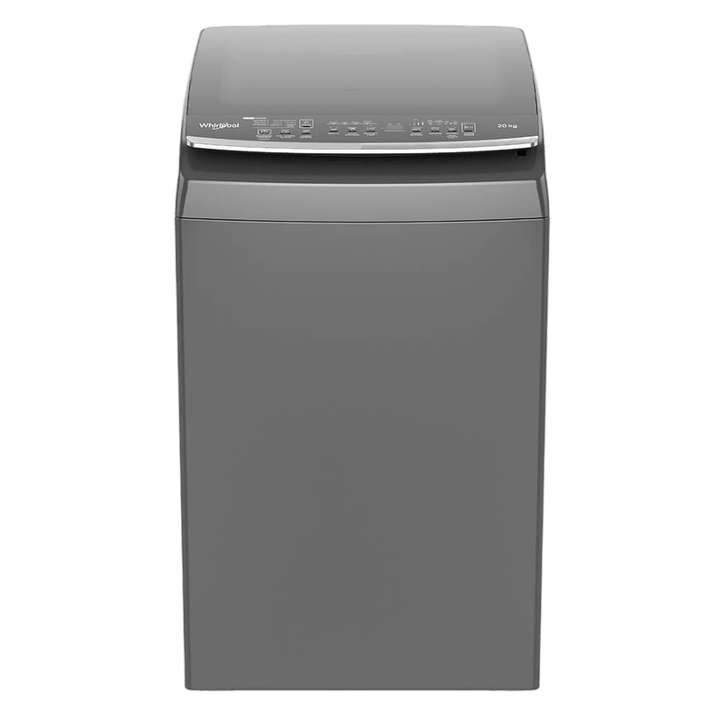
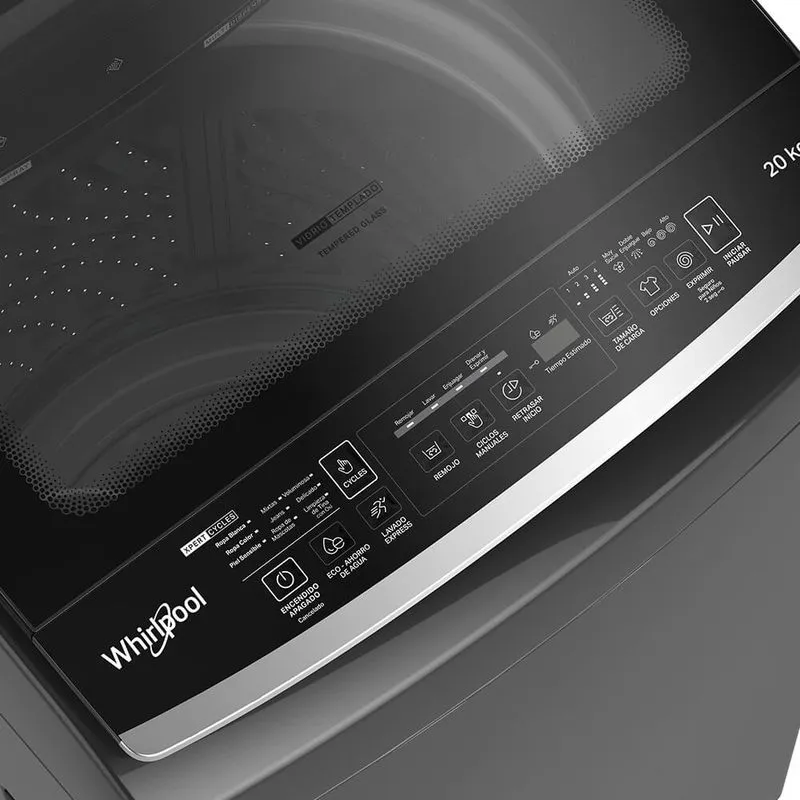

Lavadora Whirlpool carga superior de 20 KG gris con tecnología Smart Action para mayor remoción de manchas, ahorro de agua y energético, tapa de vidrio templado y panel digital en tapa con opcion de bloqueo cuenta con 11 ciclos, opcion de remojo adicional luz led.


Tecnología Smart Action para mayor remoción de manchas, ahorro de agua y energético, tapa de vidrio templado y panel digital en tapa con opción de bloqueo. Cuenta con multidispensador, 11 ciclos automáticos y 4 manuales, opción de remojo adicional, luz LED indicadora de status de ciclo, canasta de acero inoxidable. Tamaño compacto pero gran capacidad.